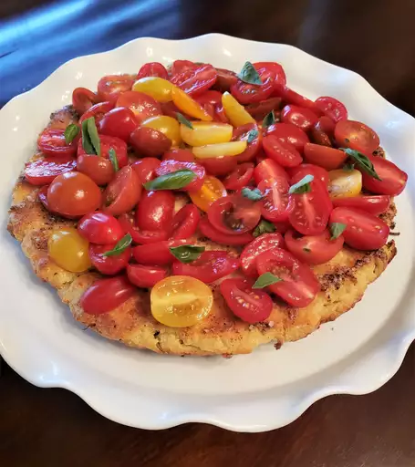

HOME
"Toy Box" Tomato and Ricotta Torta

Description
These simple, fast, and easy cheese tortas are one of my
favorite things to make with ricotta. They're especially
great in the summer, since they make a perfect base for
sweet, garden tomatoes and other seasonal produce.
You just mix, bake, and top — there's not much that
can go wrong, unless you try to do too much. And too
much is almost always too much.
Ingredients
- 2 tablespoons olive oil, divided
- 1 & 1/2 cups ricotta cheese
- 1 egg
- 1/4 cup flour
- 1/4 teaspoon baking powder
- 2 cups cherry tomatoes, halved
- 1/4 cup Parmigiano cheese
- 1 tablespoon oregano
- 2 tablespoons chopped basil
- 1/2 clove garlic, crushed
- 1/4 teaspoon black pepper
- 1 teaspoon salt
- sea salt, for sprinkling top
Steps
- Preheat the oven to 400 degrees F (200 degrees C). Grease a 9- or 10-inch pie dish with 1 tablespoon olive oil, and set aside. Preheat the oven to 400 degrees F (200 degrees C). Grease a 9- or 10-inch pie dish with 1 tablespoon olive oil, and set aside.
- Add ricotta, egg, flour, baking powder, salt, black pepper, garlic, basil, oregano, and Parmigiano-Reggiano cheese to a mixing bowl, and stir thoroughly to combine; spoon into the prepared pie dish, and spread into an even layer.
- Bake in the preheated oven until the torta puffs up a bit, and the cheese firms up, about 20 minutes. A skewer inserted in the center should come out clean.
- Let cool until just warm. Cover the top of the torta with halved cherry tomatoes. Drizzle with remaining olive oil, and season generously with sea salt. The torta can also be served at room temperature, or cold. The finished torta can also be drizzled with balsamic vinegar, or any vinegar, as well as freshly squeezed lemon.